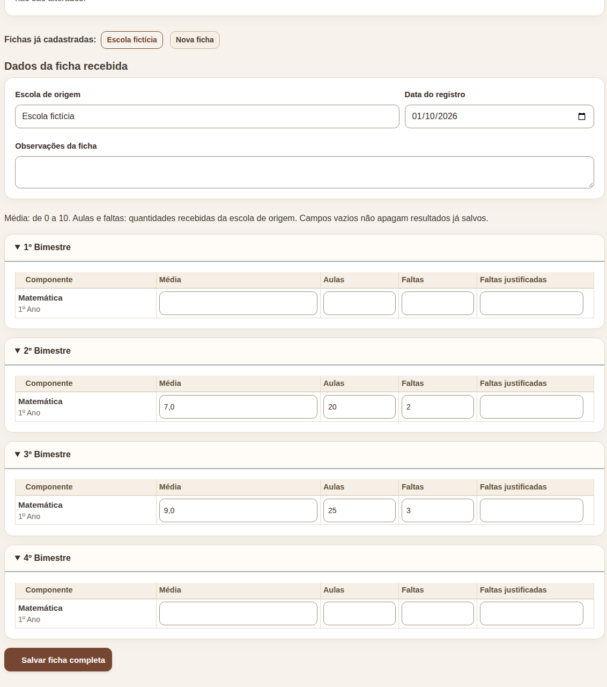
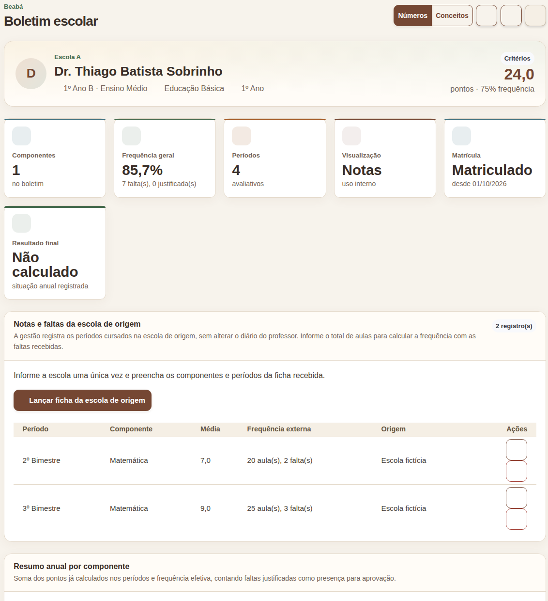

Registre a nova matrícula, transcreva os resultados da escola de origem e confira a ficha individual gerada pelo sistema.
Confirme nome do estudante, ano letivo, série, escola de origem e períodos cursados. Para cada componente, separe a média, o número de aulas, as faltas e as faltas justificadas, se houver. Mantenha o documento recebido no arquivo escolar.
Se já existia matrícula no Beabá, verifique se a transferência e sua data efetiva foram registradas corretamente. Não apague essa matrícula: as notas e faltas lançadas antes da saída serão aproveitadas. Lançamentos posteriores à transferência são ignorados.
Abra Matrículas, escolha a turma de destino e a aba Nova matrícula. Selecione o mesmo estudante, informe a data real de entrada e confira a matriz da série. Se ele nunca estudou na rede, cadastre-o primeiro como pessoa/estudante.
| Período cursado | Fonte no Beabá |
|---|---|
| Antes da transferência, em escola da rede | Matrícula antiga e diários já registrados |
| Em escola de fora da rede | Ficha da escola de origem, na matrícula nova |
| Depois do retorno | Diários dos professores da turma atual |
Evite duplicidade: não transcreva na ficha de origem o bimestre que já consta nos diários de uma matrícula da rede. Não use “Justificativas de ausência” para lançar faltas da escola externa.
Na lista da turma, localize a matrícula nova e abra Notas e faltas da escola de origem (ícone de importação). O mesmo acesso está no boletim, em Lançar ficha da escola de origem. Informe a escola e a data do registro; preencha somente as linhas que aparecem na ficha recebida.

Captura da tela do sistema em ambiente de teste. Exemplo: 2º bimestre, média 7,0, 20 aulas e 2 faltas; 3º bimestre, média 9,0, 25 aulas e 3 faltas.
A média aceita valores de 0 a 10. Ao informar faltas, informe também o total de aulas. As faltas justificadas só devem ser preenchidas se constarem no documento recebido. Deixe vazios os bimestres cursados na rede ou ainda não cursados. Clique em Salvar ficha completa.
Abra o Boletim da matrícula nova. Confira os períodos, a frequência e o resumo anual. Na linha da matrícula ou no cabeçalho do boletim, use Ficha individual em PDF. Para conferir apenas a frequência, use Atestado de frequência.

No exemplo, o sistema mostra os registros da escola de origem e soma 7 faltas no ano: 1 antes da saída, 5 na escola externa e 1 após o retorno.
Se o estudante passou por mais de uma escola externa, use Nova ficha para cada escola. Se duas escolas informarem o mesmo componente no mesmo período, procure a gestão antes de registrar: o sistema mantém um resultado por componente e período.